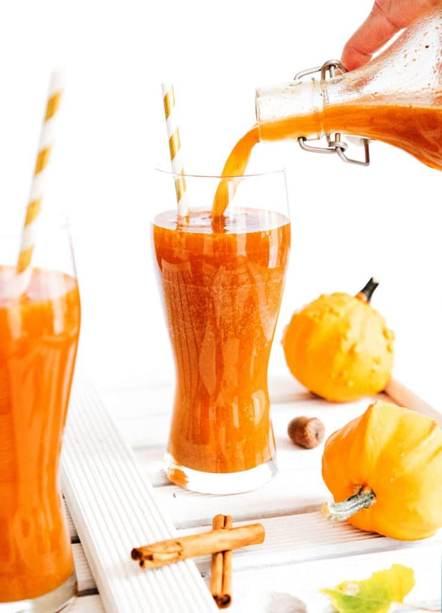

Pumpkin Spice Kombucha

This pumpkin spice kombucha is perfect for autumn, or any time really! If you love all things pumpkin, give this recipe a try!
Ingredients
- 1/2 gallon (1.9 L) kombucha from first fermentation
- 1/2 cup pumpkin puree
- 2 tsp pumpkin spice
- 1 tsp fresh grated ginger
- 1/2 tsp vanilla
- 2 cinnamon sticks
Instructions
- Mix: In a large bowl or pitcher, stir together pumpkin puree, spices, ginger, vanilla, and about 1/2 cup of the kombucha.
- Bottle: Transfer kombucha into fermentation bottles, leaving about 3 inches empty at the top. Pour in pumpkin mixture. Add cinnamon sticks. Seal tightly.
- Ferment: Place in a dark, room temperature area for 3 to 10 days, until it reaches the carbonation level you like. This process will go faster in warmer climates, and slower in cooler climates. (Tip: In order to ensure too much pressure doesn't build in the bottles, open them once a day before tightly sealing them again.)
- Enjoy: The pumpkin creates some sedimenting in this kombucha, so you can strain that out with a sieve or cheesecloth (optional), then chill in the fridge before serving. Can be stored in the fridge, tightly sealed, for several weeks.